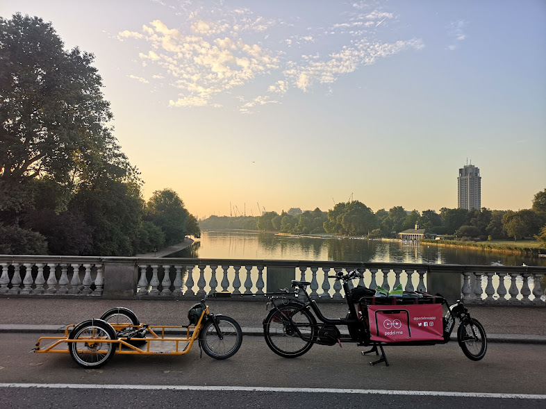

We’re Cargoworks — a crew of riders who know the city by heart. We deliver urgent parcels, meals and supplies with the speed of a local and the care of a neighbor. No corporate fluff, just honest, human-powered logistics: reliable, low-impact, and tuned to the rhythms of our streets. We show up on time, treat every drop-off like a promise, and keep the city moving without choking it. For businesses that want speed, accountability and a community edge, we’re the practical, professional choice — run by people who care.
Same-day Deliveries
Rapid, reliable cargo-bike courier service across Barcelona's central zones.

Sustainable Logistics
Low-emission, human-powered deliveries tailored for local businesses. You have a need, we have the toolbox to solve it. Hit us up right now to unlock efficiency like you haven't seen before.
Fleet & Consulting
Fleet support, consulting and cargo-bike solutions for urban logistics.
Scroll down to preview
Same-day Deliveries
Rapid, reliable cargo-bike courier service across Barcelona's central zones.
Sustainable Logistics
Low-emission, human-powered deliveries tailored for local businesses.
Fleet & Consulting
Fleet support, consulting and cargo-bike solutions for urban logistics.
More Services
Fleet maintenance, training and local logistics expertise.